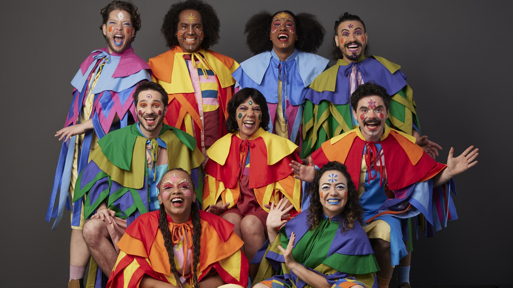

O Sesi-SP produz musical inédito e não cobra ingresso. Quem paga a conta é a indústria

Em 29 de agosto estreia no Teatro do SESI-SP, na Avenida Paulista, o musical inédito João, Joãozinho, Joãozito, sobre a infância de Guimarães Rosa. A temporada vai até 13 de dezembro, com Libras e audiodescrição em todas as sessões de sábado e domingo. O ingresso é gratuito.
A gratuidade não é cortesia de estreia. O Teatro do SESI-SP trabalha assim há décadas, sustentado por uma máquina de produção que poucos produtores privados igualam.
Uma rede do tamanho de uma secretaria de cultura
O SESI-SP mantém 19 teatros, sete centros culturais, oito espaços de exposição, três estações de cultura, 95 núcleos de iniciação em música, teatro, dança e circo e uma unidade móvel que roda o estado. Em 2026 devem entrar mais três teatros e mais três centros culturais. A entidade calcula que suas atividades culturais já alcançaram quase 20 milhões de pessoas.
O carro-chefe é o teatro da Avenida Paulista, 1.313, dentro do Centro Cultural FIESP. Ele completou 60 anos em 2024 e tem uma linhagem operária: começou em 1948 como Teatro Operário do SESI, com peças protagonizadas pelos próprios trabalhadores, virou Teatro Experimental do SESI em 1959 e Teatro Popular do SESI em 1963. Ganhou sede fixa na Paulista em 1977, com Noel Rosa: o poeta da Vila e seus amores, que atraiu mais de 300 mil pessoas.
Só na última década, segundo a instituição, o palco recebeu mais de cinquenta peças, todas gratuitas, com público acima de 2 milhões de espectadores e mais de duzentos prêmios acumulados desde a criação. Passaram por ali Felipe Hirsch, Hector Babenco, Jô Soares e Miguel Falabella, que dirigiu O Homem de La Mancha em 2014.
"Desde sua fundação, o público do espaço tem acesso, de forma gratuita, ao que existe de mais relevante na produção teatral nacional", afirma Débora Viana, gerente executiva de Cultura do SESI-SP.
Como um espetáculo entra nessa programação
Por edital. O SESI-SP abre chamamentos anuais, e o de Produções Inéditas seleciona quem estreia na Paulista. O resultado de 2025 escolheu sete espetáculos para o segundo semestre daquele ano e para 2026, entre nomes como Eduardo Tolentino de Araújo, do Grupo Tapa, Renato Borghi, Dany Bittencourt, do Cisne Negro, e João Falcão.
O critério publicado mistura relevância temática, histórico do grupo e adequação à linha curatorial da casa. Naquela edição, a prioridade declarada foram profissionais da região de São Paulo.
A diferença prática está nas condições. O regulamento prevê que o SESI-SP pode destinar aporte financeiro total ou parcial ao projeto escolhido e ceder o teatro de forma não onerosa, e determina que todas as ações sejam gratuitas ao público. O selecionado apresenta orçamento com cachês, equipe técnica, transporte e seguro, e não fecha a temporada na bilheteria, porque bilheteria não existe. Quem monta espetáculo pela Lei Rouanet e briga por sala no circuito comercial trabalha com outra planilha.
O Prêmio Bibi Ferreira, com a régua certa
O SESI-SP venceu o Prêmio Bibi Ferreira com espetáculos inéditos, mas nas categorias de teatro de prosa, não nas de musical.
A 9ª edição, entregue em 21 de setembro de 2022 no Teatro Santander, teve duas montagens da entidade no palco. Tectônicas deu a Samir Yazbek o troféu de melhor dramaturgia em peça de teatro. Terremotos, que levou 17.512 espectadores ao teatro, teve nove indicações e venceu quatro: direção (Marco Antônio Pâmio), ator coadjuvante (Luiz Guilherme), cenografia (Duda Arruk) e figurino (Fábio Namatame).
Na 11ª edição, em 30 de outubro de 2024, O Vazio na Mala, coprodução do SESI-SP com o coletivo Culturas em Movimento nascida do edital de inéditos, ganhou três estatuetas: melhor peça de teatro, melhor dramaturgia original (Nanna de Castro) e melhor atriz (Noemi Marinho). Naquela mesma noite, os prêmios de melhor musical brasileiro e de melhor musical estrangeiro ficaram com Um Grande Encontro e Beetlejuice, produções comerciais.
Quem paga o ingresso que você não paga
A indústria paga, e não por escolha. O Decreto-Lei nº 9.403, de 25 de junho de 1946, encarregou a Confederação Nacional da Indústria de criar o SESI e instituiu em favor dele uma contribuição mensal obrigatória das empresas de indústria, transportes, comunicações e pesca. A alíquota nasceu em 2% sobre a remuneração paga aos empregados e caiu para 1,5% pela Lei nº 5.107/1966, patamar mantido pela legislação seguinte.
Na própria página de legislação, o SESI registra que o artigo 240 da Constituição recepcionou essas contribuições compulsórias e que o parágrafo único do artigo 70 o obriga a prestar contas ao Tribunal de Contas da União.
Traduzindo para a bilheteria: o musical gratuito da Paulista sai de uma contribuição cobrada por lei da indústria, não de doação nem de venda de ingresso. Quem administra esse dinheiro é uma entidade de direito privado, ligada à confederação patronal, que responde por ele diante do TCU.
Daí sai a tensão. De um lado, é democratização de acesso na veia: temporada longa, sala grande, acessibilidade e preço zero, num mercado em que montar um musical no Brasil empurra o ingresso para as centenas de reais. De outro, o mesmo espetáculo disputa a mesma noite de sábado, o mesmo elenco e a mesma imprensa que os produtores que precisam vender cadeira para pagar cachê.
Procuramos declarações públicas de produtores independentes e não localizamos crítica publicada ao modelo de gratuidade do SESI-SP. O que se encontra na imprensa é reclamação sobre a dificuldade de captação e a precariedade do teatro de grupo, não sobre a concorrência da programação gratuita. Registramos a ausência em vez de fabricar um contraditório. E nada no arranjo é irregular: a contribuição está em lei desde 1946, os editais são públicos e as contas vão ao TCU. A discussão é de mercado, não de legalidade.
Fica a pergunta aberta, que vale para o Sesi e para o Sesc: uma entidade sustentada por contribuição compulsória, quando vira produtora de grande porte, amplia o mercado ou ocupa o lugar dele? Enquanto a resposta não vem, o leitor tem um musical inédito de graça na Paulista até dezembro.
Serviço
João, Joãozinho, Joãozito, de 29 de agosto a 13 de dezembro de 2026. Teatro do SESI-SP, Centro Cultural FIESP, Avenida Paulista, 1.313, em frente à estação Trianon-Masp do metrô. Sessões quintas e sextas, às 11h, e sábados e domingos, às 15h, com Libras e audiodescrição aos sábados e domingos. Classificação livre. Ingressos gratuitos, com reserva em www.sesisp.org.br/eventos.